Tvorba webové stránky
Vytvořím Vám webové stránky na míru podle Vašich přání. Jediné co potřebuji je domluvit se na designu a zaslat obsah, který na Svém webu chcete mít. Pokud si nejste jisti, mohu vymyslet obecný text, který je pak možné upravit. Zařídím všechno od frontendu po backend a hosting Vašeho webu.
* cena se odvíjí od složitosti zakázkyTechnická podpora
Pokud nastal nějaký technický problém s Vaším zařízením, mohu Vám na dálku nebo osobně poskytnout pomoc. Jestliže se bude jednat o hardwarový problém, mohu Vám pomoci koupit a vyměnit poškozenou část.
* cena se odvíjí od času stráveným hledáním chyby + cena nové části počitače a její instalace pokud byla zakoupenaSestavení počítače
Podle způsobu využití Vám navrhnu komponenty, a po konzultaci sestavím. Sestavu si pak můžete buď vyzvednout, nebo se individuálně domluvíme na způsobu doručení.
* cena se vypočíta podle ceny komponentů + času stráveným prací na sestavěNávrh databázových systémů
Pomocí MySQL datáze navrhnu nejlepší řešení pro Váš systém.
* cena podle složitosti zakázkyPráce s balíkem Adobe
Tvorba a úprava jednoduché grafiky, editace a tvorba videí, tvorba loga a jeho manuálu.
* nejsem grafik a ani to není moje primární zaměření, proto nepřijmám větší grafické projekty * cena se odvíjí od složitosti zakázky Doučování
Doučování
Pokud jste ještě studentem, mohu Vás doučit předměty, které Vám dělají problém. Pomoct Vám mohu s programováním v Jave, naučit Vás HTML, CSS + Bootstrap a JavaScript. Zároveň Vás mohu doučit hardware a jeho historii.
* cena dohodou